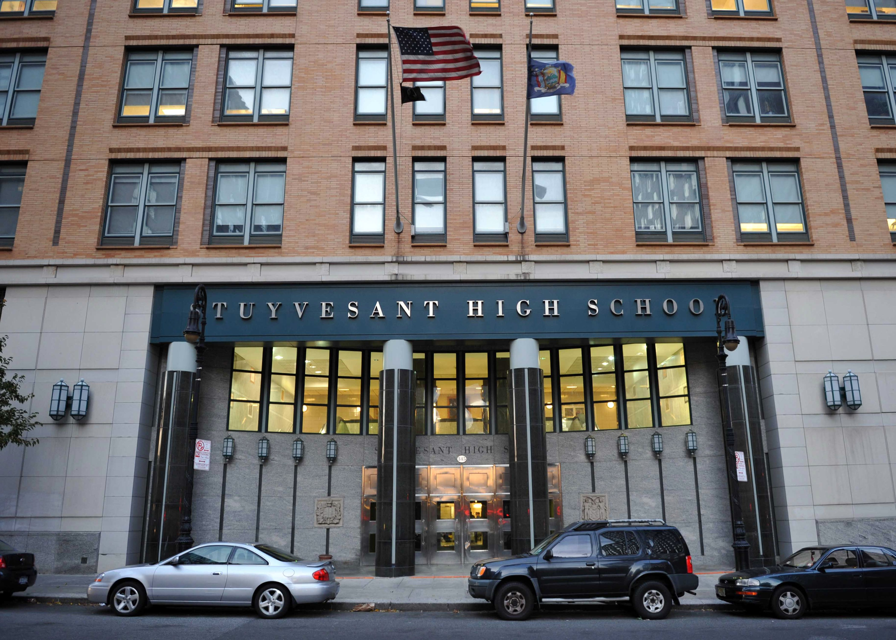

Paul Serbanescu
Web Designer, Programmer, Tech Enthusiast
Web Designer, Programmer, Tech Enthusiast
Hello! I am a student at Stuyvesant High School in downtown NYC. I've always had an affinity towards computers and have been interested in understanding what makes them tick.
